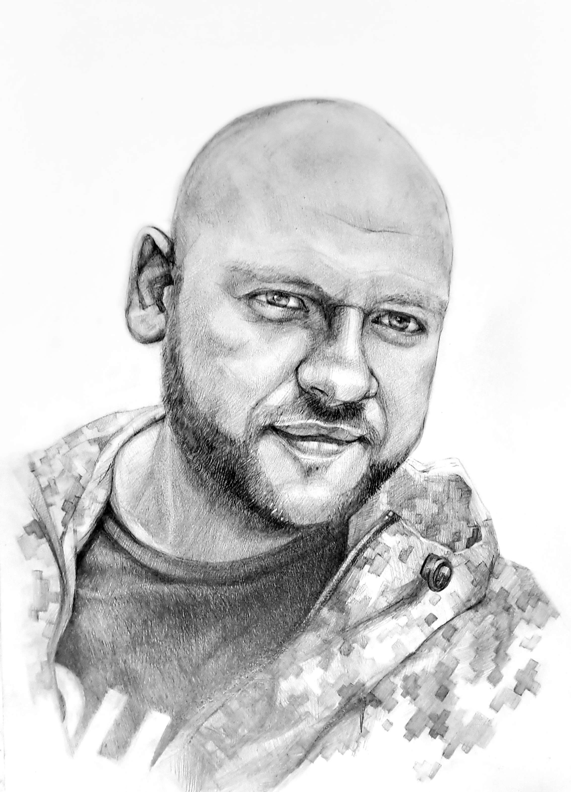

Олівець
Академічний рисунок та ілюстрація.
Переглянути →
Живопис / Акварель
Традиційні живописні роботи.
Переглянути →


Український художник і дизайнер з освітою в галузі декоративно-ужиткового мистецтва. Маю досвід роботи у рекламному дизайні та візуальних комунікаціях.
Поранений ветеран російсько-української війни. Цей досвід сформував мою відповідальність, дисципліну та витримку.